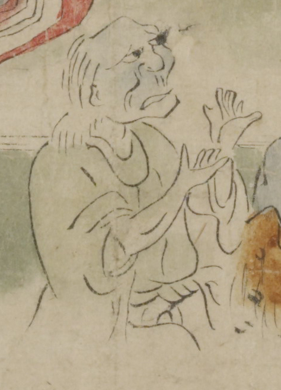

青い肌の白髪の鬼。頭頂部は禿げ、後頭部から白髪を垂らしている。緑色の着物に、白い袴をまとっている。両手を上げて拍子をとっているように見える。
著作者：坂本弥一郎徳定／出典：親書誌：U426_nichibunken_0080：伊吹山酒呑童子絵巻；イブキヤマシュテンドウジエマキ／日付：2007／資源識別子：U426_nichibunken_0080_0005_0007
Copyright (c)2010- International Research Center for Japanese Studies, Kyoto, Japan. All rights reserved.